codly.unnumbered-line
Selects a source line to show without its line number, optionally putting content in the number cell.
Signature
codly.unnumbered-line(line, fill: [])Both arguments are positional: line is required and fill is optional.
Parameters
| Field | Type | Default / required | Meaning |
|---|---|---|---|
line |
int |
Required, positional | One-based source line to leave unnumbered. |
fill |
content |
[], positional |
Content displayed instead of the automatic line number. |
Behavior
Pass entries to codly.new’s unnumbered field. The constructor takes positional arguments; implicit casts accept an integer, a one- or two-element array, or a dictionary with line and optional fill fields.
An unnumbered line does not advance the displayed number sequence, so later numbered lines remain contiguous. Consecutive unnumbered lines can be referenced with labels such as @block:l2p1 and @block:l2p2, where the l number is the preceding displayed number and p counts the unnumbered lines after it.
Example: Basic Usage
#import "@preview/codly:2.0.0" as codly
#figure(caption: [Unnumbered source lines])[
#codly.new(
```
first
label:
second
end
last
```,
unnumbered: (
codly.unnumbered-line(2, [↳]),
codly.unnumbered-line(4),
),
)
]<block>
The unnumbered lines are @block:l1p1 and @block:l2p1.Edit & run on your device
The highlighted source and output update after you stop typing. Copy code includes your edits.
